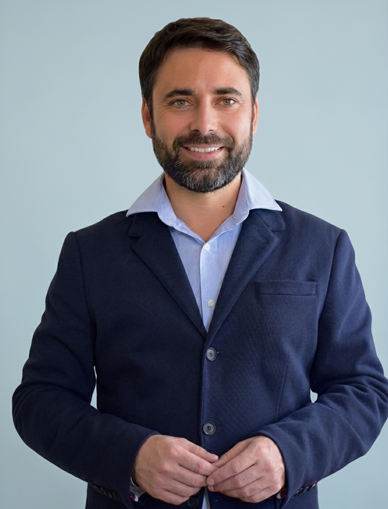

Sergii Antonov is the founder of REPRONOVA Fertility Legal Solutions and an international expert in medical and reproductive law. He has more than twenty years of legal practice spanning medical, reproductive, civil, family, international family and corporate law. He is also a mediator, facilitator and certified quality auditor.
Legal practice in assisted reproduction
His work includes legal support for reproductive programmes involving Ukraine, Georgia, Mexico and other jurisdictions. He advises on programme structures, contractual responsibilities and the legal questions that arise when treatment, birth, reproductive material or family documentation involve more than one country.
A significant part of his practice concerns independent advice for intended parents. This includes reviewing programme agreements, corresponding with agencies and clinics, examining the performance of contractual obligations and addressing difficulties during a programme. Work concerning legal parentage includes recognition of parental rights and the documents required for procedures in the jurisdictions involved.
For professional clients, he develops and reviews document templates supporting the activities of fertility clinics, gamete banks, surrogacy agencies and international medical tourism providers. These include surrogacy agreements, gamete donor agreements, consent documents and arrangements between organisations. He also prepares written legal opinions on complex assisted reproduction matters, including posthumous reproduction.
Disputes compensation and mediation
His litigation experience includes claims for damage to health arising from medical interventions, compensation disputes and matters concerning parental rights. His approach combines examination of the legal position with attention to medical records, contractual evidence and the practical consequences for the people involved.
As a mediator and facilitator, he has helped resolve dozens of conflicts in reproductive medicine. These have included embryo transfer errors, disagreements about the quality of treatment using assisted reproductive technologies, the management of surrogacy programmes and the loss of embryos or gametes.
Neutral mediation and representation of one party are distinct roles. The role, authority and interests involved are established for each assignment. Court proceedings and work requiring local professional admission are arranged separately with appropriately authorised counsel where needed.
Education and research
Sergii Antonov has education in law, medicine and forensic examination. He qualified as an advocate in Ukraine in 2004.
In 2006, he obtained the degree of Candidate of Legal Sciences (к.ю.н., equivalent to a PhD). His dissertation was entitled “Civil Law Liability for Harm to Health Caused in the Provision of Paid Medical Services”. The research examined liability for injury in the contractual provision of healthcare, a subject directly relevant to his later work on medical disputes and compensation.
In 2009, he completed professional development in Medical Law at the School of Law, University of Edinburgh, United Kingdom. In 2012, he completed mediator training at the Ukrainian Mediation Center, Kyiv-Mohyla Academy, on a course accredited by CEDR, London. In 2016, he obtained a Master of Laws (LL.M.) from the University of New South Wales in Sydney, Australia.
His MBA dissertation at the University of Cumbria, “Digital Transformation and Data Protection in Modern Gamete Banks”, examines the relationship between digital systems, legal responsibilities and the handling of donor information in contemporary gamete banking.
From 10 to 28 May 2021, he participated in the International Visitor Leadership Program on “Commercial Surrogacy Regulation”, administered by the United States Department of State, Bureau of Educational and Cultural Affairs. His participation is documented by the programme certificate.
Publications and international media
Sergii Antonov is an international expert in medical and reproductive law and the author of more than 100 academic and professional publications. His writing addresses legal liability in healthcare, assisted reproduction, cross-border reproductive arrangements and the protection of patients’ and intended parents’ rights.
He is regularly interviewed by leading international media, providing expert analysis of developments in reproductive law and the legal challenges arising in international fertility practice.
Professional education and dialogue
His teaching has included specialised courses on healthcare legislation and the legal and ethical aspects of patient relationships within a healthcare management MBA programme. He contributes to professional dialogue between lawyers, medical practitioners, researchers and organisations working in assisted reproduction.